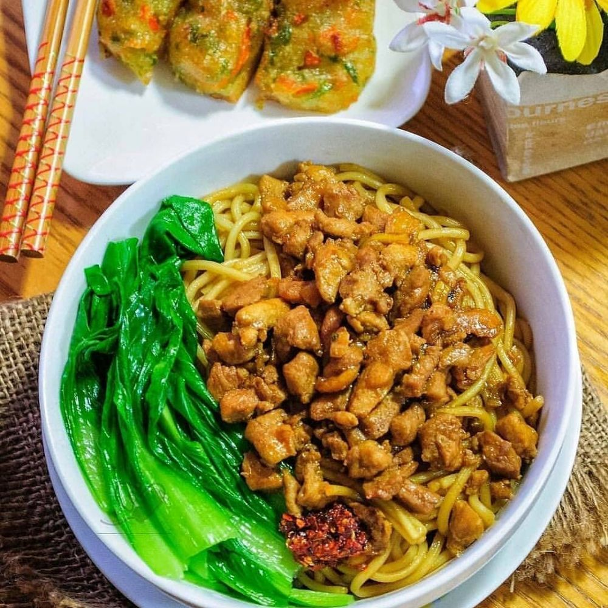

Mie Ayam Recipes

Description
Mie Ayam, or Indonesian chicken noodles, is one of Indonesia’s most beloved street food dishes. You’ll find it
steaming from street carts, food stalls, and warungs (small local eateries), served to hungry crowds at all
times of day.
What makes Mie Ayam so special is the balance of savory, sweet, and umami flavors combined with springy noodles
(like chow mein noodles), seasoned chicken, garlic, and flavorful chicken oil made from the chicken skin
which is the signature element to mie ayam.
Mie ayam can be very simple, like noodles with the seasoned diced chicken on top, or it’s topped with bok choy,
fried shallots, scallions or chilis, and a splash of chili sauce or broth on the side. In Indonesia, there are
many variations of mie ayam.
Ingridients
Chicken Topping and Chicken Skin Oil:
- 3/4 lb (450 g) chicken thighs with skin (2-3 chicken thighs; deboned; with skin)
- 4-5 cloves garlic, minced
- 2 shallots, thin sliced (use mandolin or sharp knife) – for fried shallots topping
- 2 tbsp soy sauce
- a pinch of white pepper
- 1 tbsp brown sugar
- 1/2 tbsp ginger – sliced
- Salt to taste
- Scallions or Fresno Chili for topping – optional
Noodles
Noodles:
- 4 servings fresh egg noodles (or packaged chow mein-style wheat noodles)
Optional Green:
- 2–3 bunches baby bok choy or Chinese mustard greens, blanched and lightly stir-fried
Equipment Needed
- Wok or large skillet
- Pot (for blanching noodles and vegetables)
- Small frying pan – for fried shallots
- Spatula or tongs
- Strainer or noodle spider ladle
- Mixing bowl
- Small bowl for toppings
- Bowl – for prepared seasoned chicken
- Cutting Board and Knife or Meat Scissors – optional to dice the chicken
How to Cook Strong Mie Ayam
- Prepare the Chicken Thighs
Remove the skin from the chicken thighs and set both the skin and thighs aside.
- Sear the Chicken and Render Fat to Make Chicken Oil (Minyak Ayam)
Heat a large pan over medium-high heat. Add the chicken skins first, then lay the chicken thighs flat in the
pan. Let the chicken skin render its oil and begin to sear the meat. There should be lots of chicken oil
that
comes out.
- Mix the Soy Glaze
In a small bowl, combine soy sauce and brown sugar. Stir until dissolved and set aside.
- Dice the Cooked Chicken
Lower the heat. Once the chicken is mostly cooked through and golden, remove it from the pan. Dice the
thighs
and crispy skins using a metal spatula, kitchen scissors, or cutting board. Return the chopped pieces to the
pan
with the rendered chicken oil.
- Sauté Garlic and Ginger
Push the chicken to one side of the pan. In the open space, sauté the minced garlic in the chicken oil until
golden and fragrant. Add the ginger slices and let them infuse the oil.
- Season and Glaze the Chicken
Mix everything in the pan together: chicken, garlic, and ginger. Season with salt, then pour in the soy
sauce
and brown sugar glaze. Toss until the chicken is glossy and well coated. Don’t overcook—just enough for
everything to come together.
- Remove Chicken and Reserve Oil
Transfer the chicken mixture to a bowl, leaving the seasoned chicken oil in the pan for the noodles.
- Cook the Noodles
Boil water and cook the chow mein noodles according to package instructions (typically 3 minutes). Drain
well
using a spider ladle or colander, removing as much excess water as possible.
- Toss Noodles in Chicken Oil
Add the drained noodles to the reserved chicken oil. Toss well so the noodles are fully coated and infused
with
flavor.
- Fry the Shallots
In a small pan, heat neutral oil and fry the thinly sliced shallots until golden and crispy. Drain on paper
towels and set aside.
Assemble The Dish
- Assemble the Dish
In serving bowls, add a bed of seasoned noodles. Top with a generous scoop of the glazed chicken, then
garnish
with crispy shallots. Add sliced scallions, Fresno chili, or greens for extra flavor and color.
Back to Home